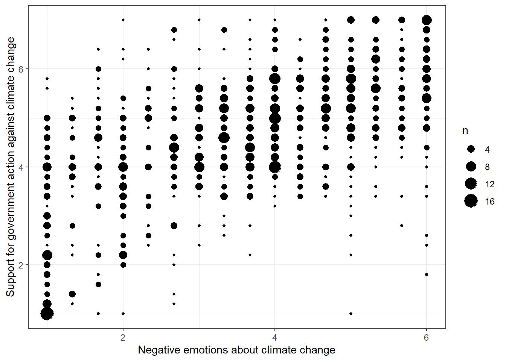
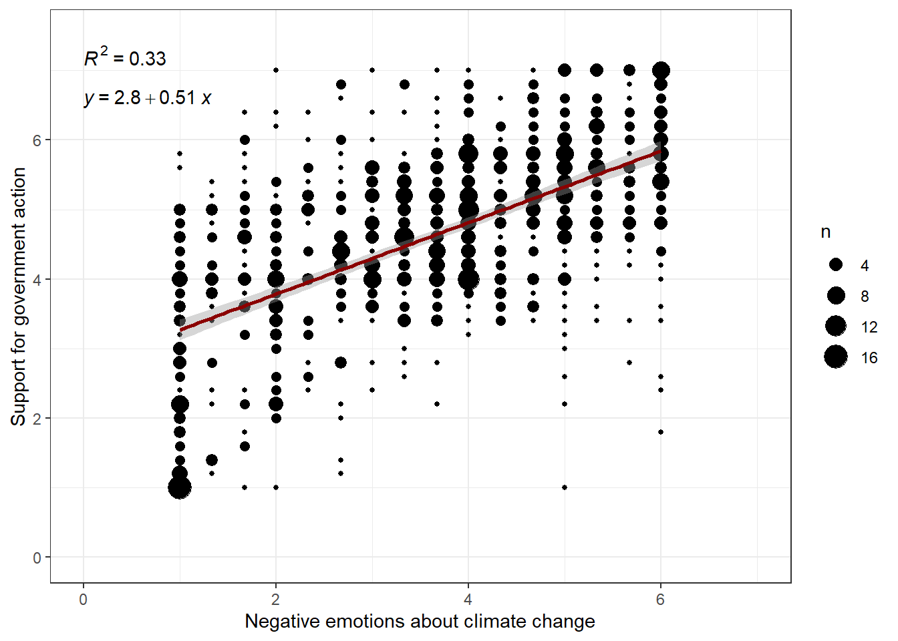
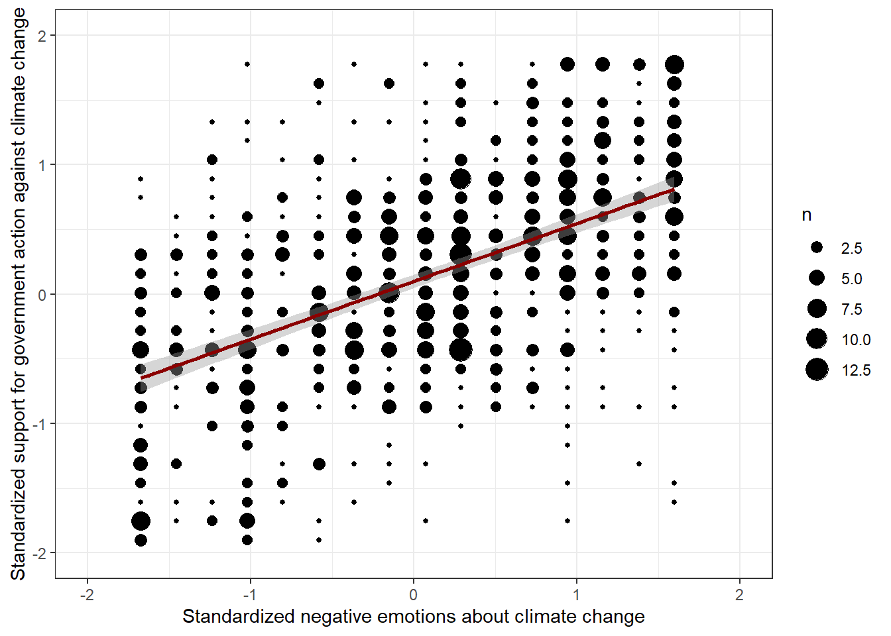

11 Tutorial: Linear regression
After working through Tutorial 11, you’ll…
- know what a linear trend and a linear regression is
- know how to visualize linear relationships
- know how to run linear models
11.1 Knowing your data
Starting in this chapter, we turn away from data management and data visualization and toward data analysis. Although you are all certainly already well acquainted with linear regression, it is worth repeating a few of the basic concepts: you will need them to understand moderation and mediation analysis.
In this chapter, we will use the glbwarm data set, which you have just tackled in Exercise 3: Test your knowledge. The data set comprises 815 US individuals who roughly represent the population of the United States. All of the following analyses can be found in Hayes, 2022, which inspired this seminar. If any of my explanations seem incomprehensible to you, or if you want to know more details and develop even greater skills, the book is more than worth the buy!
Let’s load Andrew F. Hayes’ package and data and assign them to a source object.
# installing/loading the package:
if(!require(processR)) {
install.packages("processR");
require(processR)
} #load / install+load processR
data <- processR::glbwarmYou´ll find two variables in this data set that will be of great interest to us because they are great to learn linear regression with:
- govact (= support for government action):
The variable is an index of how each participant answered five questions regarding how supportive he or she is of different policies or activities taken by the US government to address the threat of global climate change (e.g. “How much do you support or oppose increasing government investment for developing alternative energy like biofuels, wind, or solar by 25%?”).
Response options were scaled from “Strongly opposed” (coded 1) or ”Strongly support” (7). - negemot (= negative emotions about climate change):
This index measures participants´ negative emotional reactions to the potential of climate change. Participants´ responses to a question asking how often they experience each of three emotions while thinking about global warming: “worried,” “alarmed,” and “concerned”.
“Not at all,” “somewhat,” “a little bit,” “some,” “a fair lot,” and “a great deal” were among the response alternatives. These replies were numerically coded from 1 to 6, and the average of each participant´s responses across all three emotions was calculated. Higher scores reflect feeling stronger negative emotions.
Throughout this chapter, the following research question will guide us on our way to master linear regression:
Research Question: Do people who feel stronger negative emotions about the prospect of climate change report greater support for government action than those who feel such negative emotions to a lesser extent?
11.2 Visual inspection of linear trends
Before doing any data analysis, it’s always an excellent idea to first visually inspect the variables you want to use for analysis. Thus, to answer our research question, we should first visually examine the relationship between these two variables. To this end, we’ll use a bubble plot:
data %>% ggplot(aes(x=negemot, y=govact)) +
geom_count() +
theme_bw() +
labs(x="Negative emotions about climate change", y="Support for government action against climate change")
Evaluation: It seems that people who express larger negative sentiments about climate change are also more supportive of government action. This correlation is far from perfect, but the pattern is evident.
11.3 Pearson´s r
Since visual inspections can take us only this far, we should quantify the association. We´ll use Pearson´s r for that since we look at two quasi-metric variables.
If you need a more extensive recap / explanation of the Pearson’s r test, check out this video by TipTopBio, 2020 (first 9+1/2 min).
cor.test(data$govact,data$negemot, method="pearson")##
## Pearson's product-moment correlation
##
## data: data$govact and data$negemot
## t = 20.183, df = 813, p-value < 0.00000000000000022
## alternative hypothesis: true correlation is not equal to 0
## 95 percent confidence interval:
## 0.5301050 0.6217505
## sample estimates:
## cor
## 0.5777458Evaluation: The association between negative emotions about climate change and the support for government action is medium and positive (r = 0.57, p < 0.001). We can conclude that U.S. Americans who have more negative feelings about climate change are also more likely to support government action against climate change.
11.4 OLS regression
A linear regression model is an equation that uses information contained in the relationship between an explanatory variable X (also called predictor or independent variable) and an outcome variable Y (also called dependent variable) to make predictions.
When doing a linear regression analysis, we try to fit a regression line through all data points (X[i] , Y[i]) of the scatter or bubble plot. We could use many different lines, but we´ll always use that one that minimizes the distance between each point of (X[i] , Y[i]) and the line. Speaking in Math, the aim is to estimate the regression model parameters such that the resulting equation produces estimates of the dependent variable that have the lowest residuals (as measured by the ordinary least squares criterion).
A generic linear regression equation looks like this: 1. Y = i[Y] + b[1] * X,
where i[Y] is the intercept (often called b[0]) and b[1] is the regression coefficient of X.
| A generic interpretation of a simple linear regression would be that two individuals who differ by one unit on X are estimated to differ by X’s regression coefficient units on Y. For a dichotomous / binary X variable, the regression coefficient estimates the difference between both group means instead (because a one unit increase means changing groups, X = 1 and X = 0). |
If you need a more extensive recap / explanation of linear regressions and the ordinary least squares criterion, check out this video by Khan Academy, 2017 (8 min).
1) Fit a regression line
We’ll now fit a regression line to our data. To print beautiful labels to this line, install the ggpubr package, which is a ggplot2 based package that creates publication ready plots that follow scientific conventions.
# installing/loading the package:
if(!require(ggpubr)) {
install.packages("ggpubr");
require(ggpubr)
} #load / install+load ggpubrdata %>%
ggplot(aes(x=negemot, y=govact)) +
geom_count() +
theme_bw() +
xlim(0,7) + # This command is a shortcut for scale_x_continuous(limits=c(0,7))
ylim(0,7.5) +
labs(x="Negative emotions about climate change", y="Support for government action") +
geom_smooth(method='lm', formula= y~x, color = "darkred") + # This command adds the regression line to the bubble plot
stat_cor(aes(label = ..rr.label..)) + # This command adds the r-squared to the graph
stat_regline_equation(label.y = 6.6) # Controls the placement of the regression equation
Evaluation: As you can see, the equation is Y = 2.8 + 0.51*X. For a person with a negative emotions score of X = 2, the model predicts Y = 2.8 + 0.51*2 = 2.8 + 1.02 = 3.82.
Let´s suppose this person’s actual support for government action, Y, is 4.0. If so, then this person’s residual would be e = 4.0 - 3.82 = 0.18. Thus, the model very slightly overestimates this person’s support for government action by 0.18 units.
Finally, R2 provides an estimation of how much of the variance in Y can be explained by X. In this case, 33% of the variance in the support for government action can be explained by negative emotions about climate change.
2) Fit a model
You can also directly run the linear model in R:
summary(model<-lm(govact ~ negemot,data=data))##
## Call:
## lm(formula = govact ~ negemot, data = data)
##
## Residuals:
## Min 1Q Median 3Q Max
## -4.3285 -0.6731 0.1018 0.7554 3.2142
##
## Coefficients:
## Estimate Std. Error t value Pr(>|t|)
## (Intercept) 2.75732 0.09866 27.95 <0.0000000000000002 ***
## negemot 0.51424 0.02548 20.18 <0.0000000000000002 ***
## ---
## Signif. codes: 0 '***' 0.001 '**' 0.01 '*' 0.05 '.' 0.1 ' ' 1
##
## Residual standard error: 1.111 on 813 degrees of freedom
## Multiple R-squared: 0.3338, Adjusted R-squared: 0.333
## F-statistic: 407.3 on 1 and 813 DF, p-value: < 0.00000000000000022# lm -> stands for linear model and tells R to fit an OLS regression
# govact ~ negemot -> tells are to predict govact by using the values of negemot
# summary(model) -> tells are to print a summary of the OLS regression results to the consoleEvaluation: Again, we can extract the parameters for the intercept (b[0] = 2.8), the regression coefficient (b[1] = 0.51), and R2: 0.33.
11.5 Standardizing coefficients
The process of putting differently scaled variables on the same scale is called standardization. Thus, standardization allows you to compare results from differently scaled variables. For example, suppose you want to compare the effects of annual income (in $) and negative emotions about climate change (6-point scale) on support for government action (7-point scale). It is difficult to compare the effect sizes of these variables when they are scaled differently.
For standardization, you remove the mean from each observed value of the variable and divide by its standard deviation. The resulting variable will have a mean of 0 and a standard deviation of 1. When all variables of a regression model are first standardized before the model is estimated, we speak of a standardized regression model.
In a standardized regression model, all measurements are expressed in units of standard deviations from the sample mean and the intercept is always 0, i.e. the regression lines goes through the center of the coordinate system.
| A generic interpretation of a standardized simple linear regression would be that two individuals who differ by one standard deviation on X are estimated to differ by X’s regression coefficient’s standard deviations on Y. |
If you need a more extensive recap / explanation of variable standardization, check out this video by D. Caughlin, 2020 (start at 4 min).
Let’s standardize our variables before calculating the linear model:
data$negemot_st <- scale(data$negemot) # adds a new variable to the dataset that is the standardized version of negemot
data$govact_st <- scale(data$govact) # same for govact
data %>% ggplot(aes(x=negemot_st, y=govact_st)) +
geom_count() +
theme_bw() +
xlim(-2,2.0) +
ylim(-2,2.0) +
labs(x="Standardized negative emotions about climate change", y="Standardized support for government action against climate change") +
geom_smooth(method='lm', formula= y~x, color = "darkred") 
summary(model<-lm(govact_st ~ negemot_st,data=data)) # Finally, we run the actual model.##
## Call:
## lm(formula = govact_st ~ negemot_st, data = data)
##
## Residuals:
## Min 1Q Median 3Q Max
## -3.1817 -0.4948 0.0748 0.5553 2.3626
##
## Coefficients:
## Estimate Std. Error t value Pr(>|t|)
## (Intercept) 0.000000000000005405 0.028608403540518926 0.00 1
## negemot_st 0.577745819891247070 0.028625970876249084 20.18 <0.0000000000000002 ***
## ---
## Signif. codes: 0 '***' 0.001 '**' 0.01 '*' 0.05 '.' 0.1 ' ' 1
##
## Residual standard error: 0.8167 on 813 degrees of freedom
## Multiple R-squared: 0.3338, Adjusted R-squared: 0.333
## F-statistic: 407.3 on 1 and 813 DF, p-value: < 0.00000000000000022Evaluation: Now, the intercept goes through the center of the coordinate system (b[0] = 0.0). Two persons with one standard deviation difference in their negative sentiments about climate change (X) are expected to have b[1] = 0.57 standard deviations difference in their support for government action. The R2 remains untouched, of course: 0.33.
11.6 Multiple regression
Multiple regression is a statistical extension of simple linear regression that allows to examine the association between multiple independent variables and a single dependent variable.
Why not just run multiple simple regressions? Often the relationships between two variables X and Y are not absolutely clear. This is due to the fact that persons who vary in X are more likely to differ in Z, too. As a result, the changes in Y might also be caused by Z instead of X, or they might be caused by a combination of X AND Z. Multiple regression allows to extract the effect of X on Y while controlling for the effect of Z (i.e. partial effect), which is what makes multiple regression models more powerful than simple regression models.
A typical multiple linear regression equation looks like this: 1. Y = i[Y] + b[1] * X + b[2] * Z
where i[Y] is the intercept (often called b[0]),b[1] is the regression coefficient of X, and b[2] is the regression coefficient of Z.
| A generic interpretation of a multiple linear regression would be that two individuals who differ by one unit on X but are equal on Z are estimated to differ by X’s regression coefficient units on Y. For a dichotomous / binary X variable, this regression coefficient estimates the difference between both group means while holding Z constant (because a one unit increase means changing groups, X = 1 and X = 0). |
In the given example, Z is called a covariate because it is the variable that is controlled for. But X can also be called a covariate of Z, provided Z is the variable of main interest. All in all, multiple regression allows to rule out alternative explanations for an observed relationship between two variables by controlling for other variables that might also impact the dependent variable.
To run our own multiple regression model, we will predict support for government action against climate change by negative emotions about climate change, while controlling for age and political ideology (scale from 1 “Very Liberal” to 7 “Very Conservative”).
summary(lm(govact ~ negemot + age + ideology ,data=data))##
## Call:
## lm(formula = govact ~ negemot + age + ideology, data = data)
##
## Residuals:
## Min 1Q Median 3Q Max
## -4.8789 -0.6843 0.0749 0.6967 3.4815
##
## Coefficients:
## Estimate Std. Error t value Pr(>|t|)
## (Intercept) 3.994172 0.192375 20.762 < 0.0000000000000002 ***
## negemot 0.437918 0.026103 16.777 < 0.0000000000000002 ***
## age -0.001461 0.002343 -0.623 0.533
## ideology -0.218672 0.026963 -8.110 0.00000000000000186 ***
## ---
## Signif. codes: 0 '***' 0.001 '**' 0.01 '*' 0.05 '.' 0.1 ' ' 1
##
## Residual standard error: 1.067 on 811 degrees of freedom
## Multiple R-squared: 0.3876, Adjusted R-squared: 0.3853
## F-statistic: 171.1 on 3 and 811 DF, p-value: < 0.00000000000000022Evaluation: Compared to our simple model, the R2 has increased, namely from 0.33 to 0.38. This is great news because it means that we can explain more of the variance of Y with the newly introduced covariates. The equation for this model is Y = 3.99 + 0.43*X - 0.00*Z1 - 0.21*Z2. Accordingly, the intercept is at 3.99 (b[0] = 3.99) and the regression parameters are b[1] = 0.43, p < 0.001, b[2] = -0.00, p = 0.533 and b[3] = -0.21, p < 0.001. Obviously, all variables have a significant effect on Y when controlling for the other variables, except age.
The intercept can be interpreted as the value of Y when all other variables in the equation are equal to 0. That is, we would assume that the support for government action is 3.99 when a respondent has a negative emotion about climate change that equals 0 (which is not possible, since the lowest value on the scale is 1), is 0 years old (not possible for obvious reasons) and has an ideology of 0 (also not possible on a scale from 1 to 7). Because the interpretation of the intercept in multiple regression models is often nonsensical, researchers focus primarily on the interpretation of the regression coefficients.
The regression coefficients are interpreted as the difference between two people who are equal with regard to all variables, but differ in one unit on the variable of interest. For example, two persons of the same age and ideology who disagree regarding their negative emotions about climate change by one point differ by an estimated 0.43 point in their support for government action. You can enter these numbers into the regression equation. Let’s do that and compare two 20 year-olds who are both political moderates, but differ in their emotions by one point:
- Y = 3.99 + 0.43*2 - 0.00*20 - 0.21*4 = 3.99 + 0.86 - 0 - 0.84 = 4.01
- Y = 3.99 + 0.43*3 - 0.00*20 - 0.21*4 = 3.99 + 1.29 - 0 - 0.84 = 4.44
As you can see, both differ by 0.43 points!
11.7 Standardized multiple regression
If you standardize the variables before including them in the model, you make the effect sizes of the variables comparable to each other. However, this also changes the interpretation of the model, i.e. how the change of the variable of interest by one unit is interpreted. After standardization, the regression coefficients are interpreted as the difference between two people who are equal with regard to all variables, but differ in one standard deviation on the variable of interest. If X and Y are both standardized and X changes by one standard deviation while all other variables remain constant, then Y also changes by one standard deviation (even if other variables in the model were not standardized).
| A generic interpretation of a standardized multiple regression would be that two individuals who differ by one standard deviation on X but are equal on Z are estimated to differ by X’s regression coefficient’s standard deviations on Y. |
Let’s run the standardized model and try to interpret it.
data$negemot_st <- scale(data$negemot)
data$age_st <- scale(data$age)
data$ideology_st <- scale(data$ideology)
data$govact_st <- scale(data$govact)
summary(lm(govact_st ~ negemot_st + age_st + ideology_st,data=data)) # Finally, we run the actual model.##
## Call:
## lm(formula = govact_st ~ negemot_st + age_st + ideology_st, data = data)
##
## Residuals:
## Min 1Q Median 3Q Max
## -3.5863 -0.5030 0.0550 0.5121 2.5591
##
## Coefficients:
## Estimate Std. Error t value Pr(>|t|)
## (Intercept) 0.000000000000004232 0.027462514788610635 0.000 1.000
## negemot_st 0.491995051947269890 0.029325815779064967 16.777 < 0.0000000000000002 ***
## age_st -0.017533280621912107 0.028126011198986705 -0.623 0.533
## ideology_st -0.242994585930391804 0.029961998428491336 -8.110 0.00000000000000186 ***
## ---
## Signif. codes: 0 '***' 0.001 '**' 0.01 '*' 0.05 '.' 0.1 ' ' 1
##
## Residual standard error: 0.784 on 811 degrees of freedom
## Multiple R-squared: 0.3876, Adjusted R-squared: 0.3853
## F-statistic: 171.1 on 3 and 811 DF, p-value: < 0.00000000000000022Evaluation: As you can see, the intercept goes through the center of the coordinate system (b[0] = 0.0) again. b[1] = 0.49 implies that two persons of the same age and ideology who disagree regarding their negative emotions about climate change by one standard deviation are estimated to differ 0.49 standard deviations in their support for government action. Since a one standard deviation change in negative emotions produces the largest standard deviation change in support for government action, we can conclude that negative emotions are the best predictor of support for government action(at least with respect to the variables that we selected for the model).
Tip for advanced students: Always be careful not to standardize dichotomous variables. Since calculating standard deviations for dichotomous variables is nonsensical (what is the standard deviation of a variable that can only be 0 or 1, but nothing in between?), interpreting standardized dichotomous variables is illogical and should be avoided. Include the unstandardized version of these variables in your models.
11.8 Take Aways
- visualize linear trends: always visualize the relationship between your variables before data analysis
- quantify associations: use Pearson’s r to quantify linear associations
- linear regression: predicts an outcome / dependent variable Y by the values of an independent variable X
- standardization: allows you to compare results from differently scaled variables by binding all variables to a mean of 0 and a standard deviation of 1
- multiple regression: predicts an outcome / dependent variable Y by the values of an independent variable X while controlling for other covariates
11.9 More tutorials on this
You still have questions? The following tutorials & books can help you with that:
- Hayes, A. F. (2022). Introduction to Mediation, Moderation and Conditional Process Analysis (p. 29-76) Link
- Learning statistics with R: A tutorial for psychology students and other beginners by D.J. Navarro, Tutorial 15
Now let’s see what you’ve learned so far: Exercise 4: Test your knowledge.